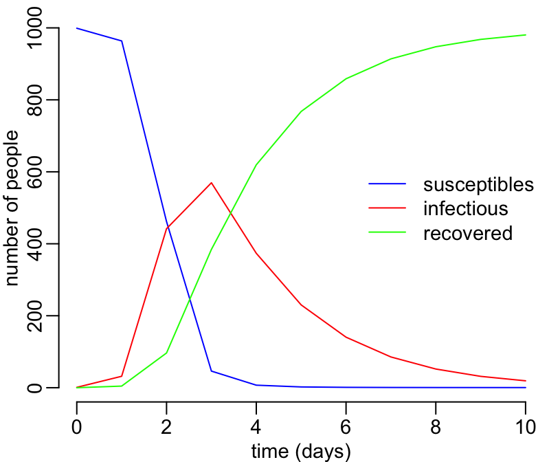

SIR models in R
Three representations of an SIR model
A verbal description
Let’s consider \(S\) susceptibles, \(I\) infectious and \(R\) recovered. Susceptibles become infected at a rate equal to the product of an infectious contact rate \(\beta\) and the number of infectious \(I\). Infectious people recover at a rate \(\gamma\).
A graphical description
We could sketch the above verbal description as follows:

We have 3 variables \(S\), \(I\) and \(R\) which are respectively the numbers of susceptibles, infectious and recovered, and we have 2 parameters \(\beta\) and \(\gamma\) which are respectively the infectious contact rate and the recovery rate.
A mathematical description
A mathematical description of the above SIR model using the differential equations formalism looks like:
\[ \frac{dS}{dt} = -\beta \times I \times S\\ \frac{dI}{dt} = \beta \times I \times S - \gamma\times I\\ \frac{dR}{dt} = \gamma\times I \]
The basic reproductive ratio R\(_0\) for this system is
\[ \mbox{R}_0 = \frac{\beta}{\gamma}N \]
Solving differential equations in R
Solving a system of differential equations means finding the values of the variables (here \(S\), \(I\) and \(R\)) at a number of points in time. These values will depend on the parameters’ values. We can numerically solve differential equations in R thanks to the ode() function of the deSolve package. If this package is not installed on your system, you need to install it:
install.packages("deSolve")To be able to use the deSolve package, you need to load it:
library(deSolve) # using the "ode" functionStep 1: writing the differential equations in R
Note the use of the with() function in the function below:
sir_equations <- function(time, variables, parameters) {
with(as.list(c(variables, parameters)), {
dS <- -beta * I * S
dI <- beta * I * S - gamma * I
dR <- gamma * I
return(list(c(dS, dI, dR)))
})
}with() works on lists only, not on vectors.
Step 2: defining some values for the parameters
Parameters values need to be defined in a named vector:
parameters_values <- c(
beta = 0.004, # infectious contact rate (/person/day)
gamma = 0.5 # recovery rate (/day)
)Don’t forget to document your code. Important information is the units of your parameters!
Step 3: defining initial values for the variables
The initial values of the variables need to be defined in a named vector:
initial_values <- c(
S = 999, # number of susceptibles at time = 0
I = 1, # number of infectious at time = 0
R = 0 # number of recovered (and immune) at time = 0
)Step 4: the points in time where to calculate variables values
We want to know the values of our SIR model variables at these time points:
time_values <- seq(0, 10) # daysStep 5: numerically solving the SIR model
We have defined all the needed ingredients:
ls()## [1] "initial_values" "parameters_values" "sir_equations"
## [4] "time_values"You can have a look at what is in these objects by typing their names at the command line:
sir_equations## function(time, variables, parameters) {
## with(as.list(c(variables, parameters)), {
## dS <- -beta * I * S
## dI <- beta * I * S - gamma * I
## dR <- gamma * I
## return(list(c(dS, dI, dR)))
## })
## }parameters_values## beta gamma
## 0.004 0.500initial_values## S I R
## 999 1 0time_values## [1] 0 1 2 3 4 5 6 7 8 9 10Everything looks OK, so now we can use the ode() function of the deSolve package to numerically solve our model:
sir_values_1 <- ode(
y = initial_values,
times = time_values,
func = sir_equations,
parms = parameters_values
)We can have a look at the calculated values:
sir_values_1## time S I R
## 1 0 999.0000000 1.00000 0.000000
## 2 1 963.7055761 31.79830 4.496125
## 3 2 461.5687749 441.91575 96.515480
## 4 3 46.1563480 569.50418 384.339476
## 5 4 7.0358807 373.49831 619.465807
## 6 5 2.1489407 230.12934 767.721720
## 7 6 1.0390927 140.41085 858.550058
## 8 7 0.6674074 85.44479 913.887801
## 9 8 0.5098627 51.94498 947.545162
## 10 9 0.4328913 31.56515 968.001960
## 11 10 0.3919173 19.17668 980.431400and you can use these values for further analytical steps, for examples making a figure of the time series. To make our life easier, let’s just first convert sir_values_1 into a data frame so that can then use it within the with() function:
sir_values_1 <- as.data.frame(sir_values_1)
sir_values_1## time S I R
## 1 0 999.0000000 1.00000 0.000000
## 2 1 963.7055761 31.79830 4.496125
## 3 2 461.5687749 441.91575 96.515480
## 4 3 46.1563480 569.50418 384.339476
## 5 4 7.0358807 373.49831 619.465807
## 6 5 2.1489407 230.12934 767.721720
## 7 6 1.0390927 140.41085 858.550058
## 8 7 0.6674074 85.44479 913.887801
## 9 8 0.5098627 51.94498 947.545162
## 10 9 0.4328913 31.56515 968.001960
## 11 10 0.3919173 19.17668 980.431400Same, same (almost). One handy difference is that now we can use the with() function, which makes the code simpler:
with(sir_values_1, {
# plotting the time series of susceptibles:
plot(time, S, type = "l", col = "blue",
xlab = "time (days)", ylab = "number of people")
# adding the time series of infectious:
lines(time, I, col = "red")
# adding the time series of recovered:
lines(time, R, col = "green")
})
# adding a legend:
legend("right", c("susceptibles", "infectious", "recovered"),
col = c("blue", "red", "green"), lty = 1, bty = "n")
The value of the \(R_0\) is
(999 + 1) * parameters_values["beta"] / parameters_values["gamma"]## [1] 8Exercises
Writing a simulator
Use some of the above code to write a sir_1() function that takes
- parameters values,
- intial values of the variables and
- a vector of time points
as inputs and run the SIR model and returns a data frame of time series as an output as below:
sir_1(beta = 0.004, gamma = 0.5, S0 = 999, I0 = 1, R0 = 0, times = seq(0, 10))## time S I R
## 1 0 999.0000000 1.00000 0.000000
## 2 1 963.7055761 31.79830 4.496125
## 3 2 461.5687749 441.91575 96.515480
## 4 3 46.1563480 569.50418 384.339476
## 5 4 7.0358807 373.49831 619.465807
## 6 5 2.1489407 230.12934 767.721720
## 7 6 1.0390927 140.41085 858.550058
## 8 7 0.6674074 85.44479 913.887801
## 9 8 0.5098627 51.94498 947.545162
## 10 9 0.4328913 31.56515 968.001960
## 11 10 0.3919173 19.17668 980.431400